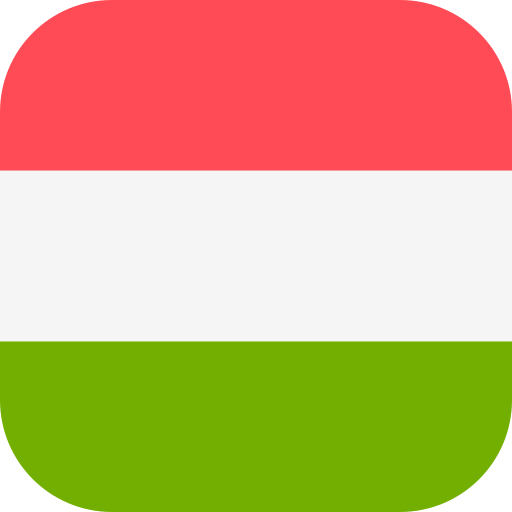

Dejan Bondokic
Informatii de baza despre persoana:
- Bondokic
- Dejan
- 23.02.1972.
- 1.85cm
- 110kg
Nume:
Prenume:
Data nasteri:
Inaltime:
Greutate:

Text desre Dejan
Dejan este tatal meu care a avut grija de noi. S-a nascut intr-o perioada dificila in statul Iugoslavia, in ceea ce multi considera un timp de aur, dar nu atat de bun din cauza razboiului. Locuia la tara si nu prea avea tot ce isi dorea. A participat la razboi si ca sofer de camioane si ambulante. In copilarie, isi petrecea timpul acasa sau jucandu-se cu prietenii, cand a crescut mergea la aceeasi scoala din satul in care locuia, iar liceul a terminat la Belgrad. A absolvit scoala pentru a deveni capitan de nava, o meserie pe care nu a facut-o niciodata, a fost doar de cateva ori intr-un stagiu unde a fost cel mai bun, dar a fost atras de altceva. Si anume, afaceri, comert, munca, piata... Nu a lucrat niciodata pe nicio nava, dar de aceea a vizitat toate pietele posibile. El face aceasta meserie de 23 de ani si se pricepe foarte bine la asta. De-a lungul anilor, si-a adaptat afacerea la clienti si si-a imbunatatit-o. Astazi, are doi fii care il fac foarte fericit si care il ajuta cu afacerea si magazinul si cu toate celelalte. El este intr-o casnicie fericita, ceea ce face familia si mai puternica si mai fericita.
Scola primara
A terminat scoala primara in satul sau in care locuia in copilarie. La scoala, era foarte bun in comparatie cu alti elevi, prietenii lui. I-a ajutat pe toti si le-a dat teste, care pana la urma s-au terminat prost pentru ca toti au ajuns undeva in strainatate si a ramas in Serbia luptand si muncind forte greu. Poate ca e mai bine ca a ramas in tara lui si nu a plecat in strainatate, ca sa fie propriul sau sef. Scoala din sat nu era bine dotata, dar era buna pentru vremea aceea. Aveau profesori stricti si pedepse stricte daca nu voiai sa asculti, asa ca din acele scoli au iesit oameni reali si onesti.

Liceu
Din cauza situatiei financiare proaste, parintii nu l-au putut inscrie la liceu si nici nu si-au dorit, dar Dejan si-a luat treaba in maini, a fugit de acasa si a plecat la Belgrad pentru a se inscrie si a studia la liceu. S-a inscris la liceul pentru a deveni capitan de navar, a locuit in caminul in care locuiau si toti ceilalti elevi si studenti. Erau zece in camera, era o mare problema, dar asa era inainte. Parintii nu stiau ce se intampla cu el sau ce face sau unde se afla, nu i-au trimis nici macar un Dinar. Numai Dejan stie cum a supravietuit si cum a terminat liceu. A terminat cu succes scoala si, bineinteles, a primit o diploma si un certificat de nava, care ii permit sa lucreze pe o nava. La Belgrad, a trecut pentru prima data testul pentru o masina, ceea ce este impresionant pentru mine. De fapt, tot ceea ce a experimentat Dejan este impresionant.Pentru mine, tatal meu a fost intotdeauna capitanul navei si va fi mereu, el este liderul drumului, el este responsabil de tot. Din pacate, nu a continuat aceasta meserie pentru ca a fost nevoit sa merge la armata si dupa aceea a facut diverse alte meserii, motiv pentru care a ajuns in lumea afacerilor.
Dejan in armata
Dejan a fost in armata timp de 8 luni, unde a lucrat ca sofer de camion si sofer de ambulanta pentru fosta Iugoslavie. Pentru un baiat de la tara a fost foarte ciudat si greu, dar trebuia sa se intample. I-a fost foarte greu si obositor pentru ca uneori trebuia sa conduca 3 zile la rand fara sa se opreasca sau sa faca pauza. Cred ca este foarte incomod si ciudat si dificil. A terminat cu succes armata, cu atat mai mult si a fost eliberat acasa mai devreme din cauza faptului ca nu si-a luat concediu nici odadata.
Ce facea Dejan dupa razboi ?
Dejan a terminat scoalaa deveni capitan de navar la Belgrad, dar, din pacate, razboiul a inceput si Dejan a trebuit sa mearga acolo. Dupa razboi, nu si-a mai continuat munca de capitan de nava, ci a fost nevoit sa faca altceva. Primul lui loc de munca adevarat a fost in catering, a lucrat ca ospatar. A inceput intr-o cafenea care serveste oamenii, era foarte bun la meseria aceea si stia sa faca si niste prajituri, precum baklava, tulumbe. A lucrat in doua cafenele si dupa aceea a inceput sa vanda lucruri la pietele de vechituri si piete.
Dejan si munca lui la piata
Dejan si-a inceput prima afacere adevarata cand a inceput sa lucreze in piete si piete de vechituri. A inceput prin a vinde diverse lucruri, cum ar fi cani, farfurii, bureti, totul pentru casa, dar atunci arata cu mult diferit fata de azi. Lucra pentru el insusi, nu avea angajati si nici ghiseul nu era prea mare. Sotia lui a ajutat uneori cand avea timp. Dejan a transportat marfuri intr-o masina "Jugo", care a fost primul sau vehicul in care a transportat marfura si cu care a mers in diverse piete, piete de vechituri si targuri. Era o masina gri, era foarte mica si nu prea era loc in ea, avand in vedere ca fusese plina cu marfa. Odata cu trecerea timpului, Dejan si-a imbunatatit abilitatile in vanzarea de marfuri, si-a luat un alt vehicul, si-a schimbat locul de vanzare si a marit si taraba. Desigur, nici atunci nu era totul grozav, dar dupa cincisprezece ani, Dejan a reusit sa-si imbunatateasca munca si abilitatile la maximum si, bineinteles, sa-si deschida primul magazin, pe care il detine si astazi. Magazinul arata astazi mult mai mare decat aratau tarabele atunci si bineinteles ca magazinul este bine echipat, Dejan nu mai trebuie sa se chinuie sau sa stea la frig, ploaie sau vant. Astazi, Dejan este ajutat si de fiii sai, ceea ce ii usureaza mult munca. Fratele meu, si fiul lui a progresat atat de mult incat astazi este proprietarul firmei "BONDI".
Acestea sunt toate masinile pe care Dejan le-a detinut de-a lungul timpului
Nu detinea multe masini, dar a schimbat masinile in functie de situatia sa financiara si de nevoile afacerii. Fiecare masina era preferata lui si nu s-a plans niciodata ca masina este proasta.

Fica
1980-1999"Fica" a fost prima lui masina pe care a avut-o cand era tanar. Era un "Fica" galben cu doua usi pe care l-a cumparat din banii sai castigati din greu.

Jugo
1999-2005"Jugo" a fost a doua masina pe care si-a cumparat-o din motive de afaceri, pentru ca a folosit-o in perioada in care a inceput sa vande in piete. In ea transporta marfa si le transporta dintr-un loc in altul. Masina i-a servit bine si masina aceea era foarte faimoasa la acea vreme si era prestigios sa o aiba.
Ford
2005-2008"Ford" a fost prima lui masina de familie pe care a detinut-o. Masina era gri si mai mare decat toate precedentele. Masina a fost prabusita de alte persoane, ceea ce l-a obligat pe Dejan sa o schimbe rapid si sa cumpere alta. Desigur, masina a servit bine si Dejan nu a avut probleme cu ea.

Opel Astra
2008-2010"Opel Astra" a fost a doua masina a lui de familie, era un model caravana al acelei marci si era foarte lung. A servit bine, l-a ajutat foarte mult pe Dejan in transportul si procurarea marfurilor. Avea un portbagaj mare si era confortabil pentru vremea respectiva. Am calatorit in diverse destinatii cu masina aceea si nu am avut niciodata o singura problema. Odata am facut 2000km intr-o saptamana si masina a functionat perfect normal si nu am avut probleme.

Renault Megan
2010-2015"Renault Megan", tot un model caravana al acestei marci, ceva mai nou ca infatisare, a fost al cincilea automobil al lui Dejan. De asemenea, o masina foarte spatioasa si lunga care era convenabila pentru marfa pentru ca avea un portbagaj mare. De asemenea, aceasta masina era o masina de familie, convenabila pentru calatorii, era de culoare albastra si am pastrat-o cinci ani buni.
Peugeot 407 SW
2015-2018"Peugeot 407 SW" era o racheta de masina. Era de culoare neagra si parea foarte puternic, iar interiorul sau semana cu o nava spatiala. Avea atat de multe butoane incat nu stiam ce functie ce face la momentul respectiv. Era o masina echipata bine care a fost cumparata in strainatate. Avea un portbagaj mare si era confortabil pentru calătorii, ca masina de familie functiona foarte bine. Singurul dezavantaj al masinii care nu i-a placut lui Dejan a fost ca era foarte joasa, ceea ce lui Dejan nu i-a placut pentru ca atunci cand punea marfa in masina, masina se cobora in masura in care se lipeste de asfaltul drumului, care l-a obligat pe Dejan sa schimbe rapid masina si sa ia ceva mai sus si mai mare, ceea ce a si facut Dejan.
Peugeot 5008
2018-2023"Peugeot 5008" este ultima masina pe care Dejan a cumparat-o pana acum. A cumparat-o din motive de afaceri si, de asemenea, masina este confortabila si convenabila pentru calatorii. Masina este ca un jeep, inalta si mare. In interior este suficient loc pentru fiecare persoana iar scaunele sunt confortabile.
Unde a calatorit Dejan ?
In tinerete, Dejan nu a calatorit prea mult in strainatate, era mai mult la tara si lucra prin casa. Cand a crescut si a inceput sa lucreze, a economisit bani si si-a dorit mereu sa calatoreasca. A calatorit cand era in liceu si cand era judecator. De-a lungul timpului, Dejan a inceput sa calatoreasca si sa faca turul lumii. Cand am infiintat compania si am inceput sa lucrez, asa a inceput sa castige bani, astfel a inceput si sa calatoreasca. A vizitat multe tari pana acum, dar isi doreste sa viziteze si mai multe.
Dejan je obisao sledece drzave:
- Romania
- Bulgaria
- Croatia
- Bosnia si Hertegovina
- Ungaria 
- Austira


- Germania
- Danemarca
- Franta
- Italia
- Spania
- Monaco
- Turcia